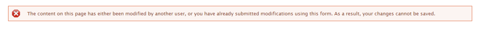

Legal Content CMS
Content types for legal content:
Known Workarounds
Node form is outdated or modified by someone else
This bug happens when a staff or intern leaves content in draft or ready to review mode and then someone tried to edit that node, an error
To resolve:
First, check that you don’t have multiple edit windows open. If you do, close them, and reload the edit form
If it still persists, check that no one else has the page open for editing
If that still doesn’t resolve it, check that the current publish status is draft/revise or ready to review. The only known workaround for this:
View the latest version
That page has a drop down to change the state
Set the state to published
You should be able to edit and save the node now
Note
This is a known bug that we are working on getting fixed.
See also: